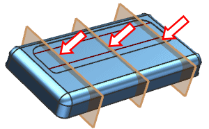
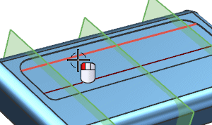
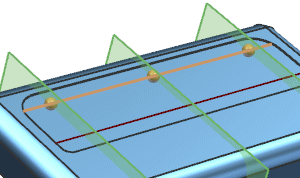
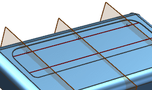
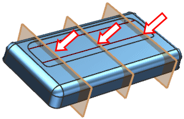
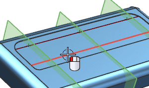
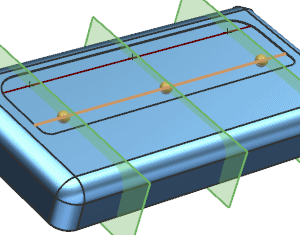
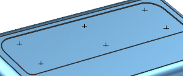

Choose Insert→Datum/Point→Point Set.
From the Type list, choose Intersection Points.
In the Curve, Face or Plane group, with Select Object active, select the three planes shown below:

In the Curve group, with Select Curve active, select the top section line you just created.


Click Apply.

From the Type list, choose Intersection Points.
In the Curve, Face or Plane group, with Select Object active, select the three planes shown below:

In the Curve group, with Select Curve active, select the lower section line.


Click OK.
Hide the planes and the section lines.
